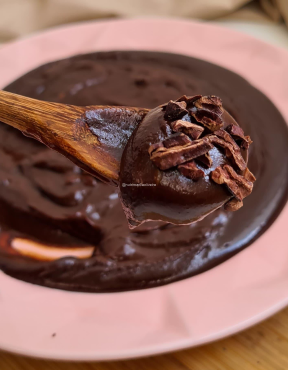

Categorias
Sobremesas & Doces
Cookies Americanos
Essas delícias, que exalam um aroma irresistível de baunilha e chocolate durante o preparo, são perfeitas para acompanhar um café ou um copo de leite.
VerBrownie
Com ingredientes simples, como achocolatado e açúcar refinado, você consegue criar um doce irresistível em pouco tempo.
Ver

Brigadeiro de Colher
Ideal para sobremesas rápidas ou para matar aquela vontade de doce, o brigadeiro de colher é um verdadeiro abraço em forma de chocolate!
VerMouse de Maracujá
Essa sobremesa leve e arejada é perfeita para qualquer ocasião, trazendo um toque tropical à mesa.
Ver